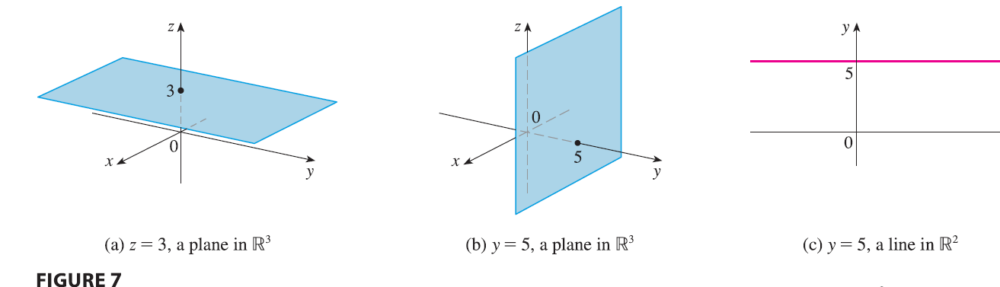
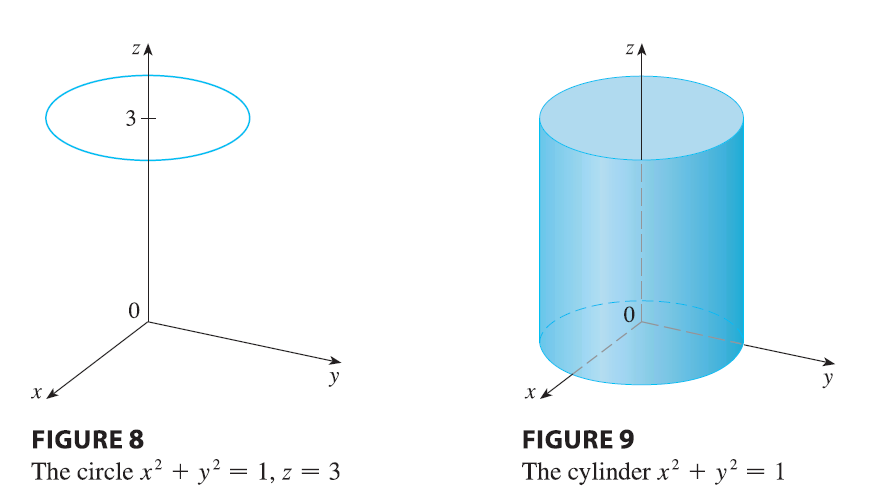

In two-dimensional analytic geometry, the graph of an equation
involving \(x\) and \(y\) is a curve in \(\mathbb{R}^2\). In three-dimensional
analytic geometry, an equation in \(x,
y,\) and \(z\) represents a
surface in \(\mathbb{R}^3\).
EXAMPLE 1 What surfaces in \(\mathbb{R}^3\) are represented by the
following equations? (a) \(z = 3\) (b)
\(y = 5\)
SOLUTION (a) The equation \(z = 3\) represents the set \(\{(x, y, z) | z = 3\}\), which is the set
of all points in \(\mathbb{R}^3\) whose
z-coordinate is 3 (\(x\) and \(y\) can each be any value). This is the
horizontal plane that is parallel to the xy-plane and three units above
it as in Figure 7(a).

The equation \(y = 5\) represents
the set of all points in \(\mathbb{R}^3\) whose y-coordinate is 5.
This is the vertical plane that is parallel to the xz-plane and five
units to the right of it as in Figure 7(b).
NOTE When an equation is given, we must understand
from the context whether it represents a curve in \(\mathbb{R}^2\) or a surface in \(\mathbb{R}^3\). In Example 1, \(y = 5\) represents a plane in \(\mathbb{R}^3\), but of course \(y = 5\) can also represent a line in \(\mathbb{R}^2\) if we are dealing with
two-dimensional analytic geometry. See Figure 7(b) and (c).
In general, if \(k\) is a constant,
then \(x = k\) represents a plane
parallel to the yz-plane, \(y = k\) is
a plane parallel to the xz-plane, and \(z =
k\) is a plane parallel to the xy-plane. In Figure 5, the faces
of the rectangular box are formed by the three coordinate planes \(x = 0\) (the yz-plane), \(y = 0\) (the xz-plane), and \(z = 0\) (the xy-plane), and the planes
\(x = a, y = b,\) and \(z = c\).
EXAMPLE 2 (a) Which points \((x, y, z)\) satisfy the equations \(x^2 + y^2 = 1\) and \(z = 3\)? (b) What does the equation \(x^2 + y^2 = 1\) represent as a surface in
\(\mathbb{R}^3\)?

SOLUTION (a) Because \(z =
3\), the points lie in the horizontal plane \(z = 3\) from Example 1(a). Because \(x^2 + y^2 = 1\), the points lie on the
circle with radius 1 and center on the z-axis. See Figure 8. (b) Given
that \(x^2 + y^2 = 1\), with no
restrictions on \(z\), we see that the
point \((x, y, z)\) could lie on a
circle in any horizontal plane \(z =
k\). So the surface \(x^2 + y^2 =
1\) in \(\mathbb{R}^3\) consists
of all possible horizontal circles \(x^2 + y^2
= 1, z = k\), and is therefore the circular cylinder with radius
1 whose axis is the z-axis. See Figure 9.
EXAMPLE 3 Describe and sketch the surface in \(\mathbb{R}^3\) represented by the equation
\(y = x\).
SOLUTION The equation represents the set of all
points in \(\mathbb{R}^3\) whose x- and
y-coordinates are equal, that is, \(\{(x, x,
z) | x \in \mathbb{R}, z \in \mathbb{R}\}\). This is a vertical
plane that intersects the xy-plane in the line \(y = x, z = 0\). The portion of this plane
that lies in the first octant is sketched in Figure 10.